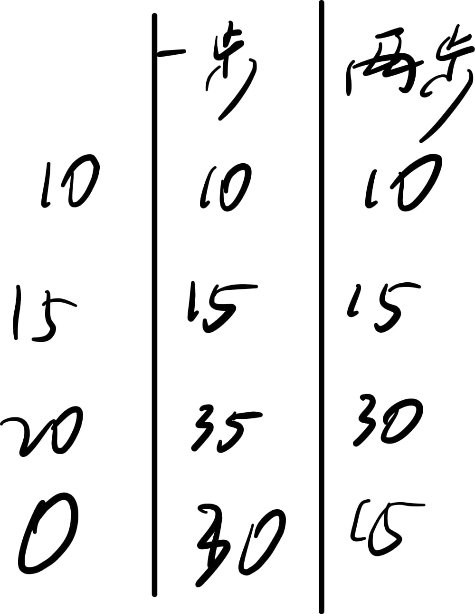
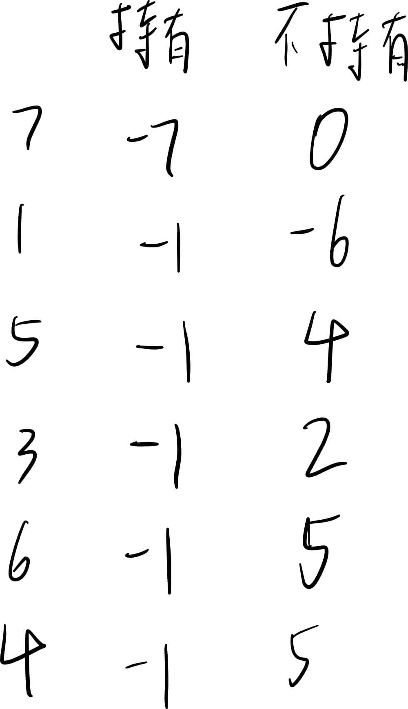

经典算法--动态规划
本文最后更新于：2 个月前
动态规划(dynamic programming)问题与分治问题相似，是通过结合子问题的解来求解原问题的算法。
programming指的是一种表格法而不是计算机程序，也暗含了动态规划的基本思想
动态规划与分治算法的异同
动态规划与分治算法同样是将复杂的原问题分解为若干小问题进行求解；
但是分治算法是将原问题分成互不相关的子问题；而动态规划算法的子问题往往是一环套一环，求解后面的问题时需要用到前面的答案。
动态规划问题的特征
动态规划方法常常用来求解最优化问题。这类问题及其子问题往往有许多个可行解，我们希望找到其最优解（最小值或最大值），于是就需要每一个小问题都求出最优解，这些小问题的取值又会相互制约；此时就需要使用动态规划算法。
所以适合应用动态规划方法求解的最优化问题一般具有几个重要特征：
最优子结构
在动态规划方法中,我们通常自底向上地使用最优子结构。也就是说,首先求得子向题的最优解,然后求原问题的最优解。在求解原问题过程中,我们需要在涉及的子问题中做出选择,选出能得到原问题最优解的子问题。原问题最优解的代价通常就是子问题最优解的代价再加上由此次选择直接产生的代价。
子问题重叠
适合用动态规划方法求解的最优化问题应该具备的第二个性质是子问题空间必须足够“小”，即问题的递归算法会反复地求解相同的子问题,而不是一直生成新的子问题。一般来讲,不同子问题的总数是输入规模的多项式函数为好。如果递归算法反复求解相同的子问题,我们就称最优化问题具有重叠子问题)性质。
注意：子问题重叠并不代表子问题可以不离散；即子问题之间不能相互影响，例如下面的背包问题，如果选择了吉他之后音响所占重量会更轻，那么这个问题无法使用动态规划解决
只求结果而不求过程
动态规划过程中往往会将每个子问题的结果抹掉，最后得到的只是最优解的数值；这一点在算法题中尤为明显，往往只是询问最大结果是多少而不问如何取得最大成果
动态规划食用方法
经典例子：背包问题
有一个可装4磅重量的背包，可供容纳的物品有：[磅数， 价值]，音响[4,3000],笔记本电脑[3,2000],吉他[1,1500]。相同物品只能装一个，请问如何装能使背包的价值最高？
动态规划算法都从网格开始，这个问题的网格如下
| 可选择的商品\容量为1~4的背包 | 1 | 2 | 3 | 4 |
|---|---|---|---|---|
| 吉他 | 容纳物品价值 | |||
| 音响 | ||||
| 笔记本电脑 |
为了简单，填表顺序为从左上到右下，引出另一个重要概念状态转移方程 人话讲就是填表方程
这个表的状态转移方程就是cell [i] [j] = max(cell [i-1] [j], 当前行物品价值+装一个当前行物品后剩余空间价值）
i为行 j为列
就可以得到这样的一张表格
| 1 | 2 | 3 | 4 | |
|---|---|---|---|---|
| 吉他 | 1500 | 1500 | 1500 | 1500 |
| 音响 | 1500 | 1500 | 1500 | 3000 |
| 笔记本电脑 | 1500 | 1500 | 2000 | 3500 |
所以最终结果就是3500，一个吉他一个笔记本。
Talk is cheap ,show me the code
先来一个简单一点的
使用最小花费爬楼梯
数组的每个下标作为一个阶梯，第 i 个阶梯对应着一个非负数的体力花费值 cost[i]（下标从 0 开始）。
每当你爬上一个阶梯你都要花费对应的体力值，一旦支付了相应的体力值，你就可以选择向上爬一个阶梯或者爬两个阶梯。
请你找出达到楼层顶部的最低花费。在开始时，你可以选择从下标为 0 或 1 的元素作为初始阶梯。
2
3输入：cost = [10, 15, 20]
输出：15
解释：最低花费是从 cost[1] 开始，然后走两步即可到阶梯顶，一共花费 15 。来源：力扣（LeetCode）
链接：使用最小花费爬楼梯
表格如图，表中数据为到达该点所需最小体力

状态转移方程: cell [i] [1] = min(cell [i-1] [1]+cost[i], cell [i-1] [2]+cost [i])
cell [i] [2] = min(cell [i-2] [1]+cost[i], cell [i-2] [2]+cost [i])
Tips:由于填表时最多只用到三行，所以可以构建一个只有三行的表循环使用，减少空间占用
1 | |
买卖股票的最佳时机
给定一个数组 prices ，它的第 i 个元素 prices[i] 表示一支给定股票第 i 天的价格。
你只能选择 某一天 买入这只股票，并选择在 未来的某一个不同的日子 卖出该股票。设计一个算法来计算你所能获取的最大利润。
返回你可以从这笔交易中获取的最大利润。如果你不能获取任何利润，返回 0 。
来源：力扣（LeetCode）
链接：买卖股票的最佳时机
2
3
4输入：[7,1,5,3,6,4]
输出：5
解释：在第 2 天（股票价格 = 1）的时候买入，在第 5 天（股票价格 = 6）的时候卖出，最大利润 = 6-1 = 5 。
注意利润不能是 7-1 = 6, 因为卖出价格需要大于买入价格；同时，你不能在买入前卖出股票。
可以得到如图的表

状态转移方程为cell[i] [1] = max(cell [i-1] [1], -price[i])
cell[i] [2] = max(cell[i-1] [1] + price[i] , cell[i-1] [2])
这里最难想到的是列表的方法，也是每个题中变数最大的地方，要勤加观察
Tips: 由于卖出股票之后不可以再次买入，所以求解 持有 状态时无需用到 不持有 状态的值
1 | |
经典：连续子数组的组大和
输入一个整型数组，数组中的一个或连续多个整数组成一个子数组。求所有子数组的和的最大值。
要求时间复杂度为O(n)。
2
3输入: nums = [-2,1,-3,4,-1,2,1,-5,4]
输出: 6
解释: 连续子数组 [4,-1,2,1] 的和最大，为 6。
这个问题列出的表格如下
| i | -2 | 1 | -3 | 4 | -1 | 2 | 1 | -5 | 4 |
|---|---|---|---|---|---|---|---|---|---|
| 以i位结尾的最大子数组和 | -2 | 1 | -2 | 4 | 3 | 5 | 6 | -1 | 3 |
其中最难想到的就是表中填的数字，和一般的动态规划有一定的差异，想到这个表之后状态转移方程也就是简而易见了
1 | |
总结
动态规划类问题比较难的部分就是灵活变通，找出最适合解决问题的列表方法和状态转移方程。
切记不能拘泥于一种想法不知变通。
本博客所有文章除特别声明外，均采用 CC BY-SA 4.0 协议 ，转载请注明出处！